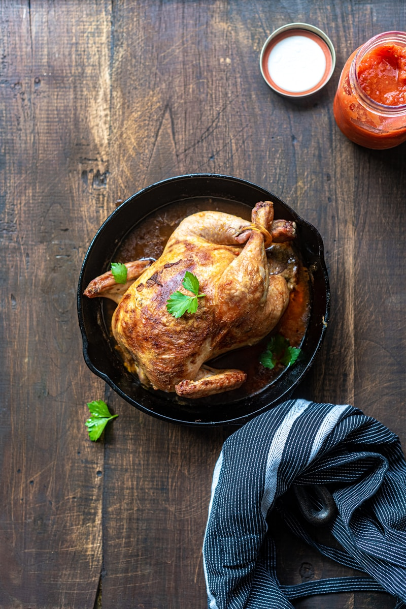

01

Herb-Roasted Spring Chicken with Lemon & Thyme
A classic preparation that lets the natural flavors shine. Fresh herbs, garlic, and bright lemon create an aromatic crust while keeping the meat incredibly moist.
Ingredients
- 1 spring chicken (about 500g)
- 3 tbsp olive oil
- 4 cloves garlic, minced
- Fresh thyme (6-8 sprigs)
- Fresh rosemary (2 sprigs)
- 1 lemon, halved
- Salt and black pepper
- 2 tbsp butter, softened
Instructions
- Preheat oven to 200°C (400°F).
- Pat chicken dry and season cavity with salt and pepper. Stuff with lemon halves and half the herbs.
- Mix butter with minced garlic and remaining chopped herbs. Rub under and over the skin.
- Drizzle with olive oil and season generously with salt and pepper.
- Roast for 45-55 minutes until golden and juices run clear (internal temp 74°C/165°F).
- Rest for 10 minutes before carving. Serve with pan juices.